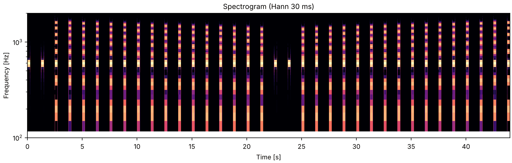
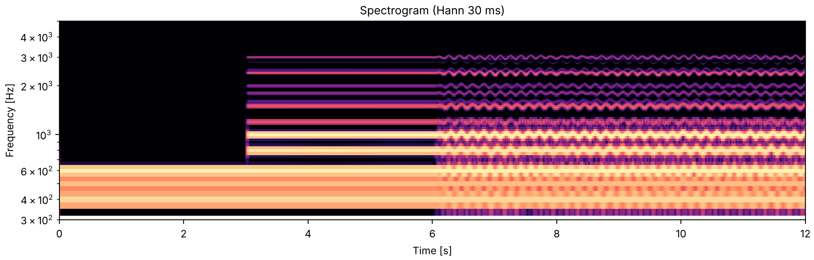

Every sound on this page is sonore's reproduction of a published demonstration, or of a classic
stimulus. Most are from Albert Bregman and Pierre Ahad's Demonstrations of Auditory Scene
Analysis (1996), the compact disc that accompanies Bregman's book Auditory Scene Analysis
(1990); one is from the Acoustical Society of America's Auditory Demonstrations (Houtsma,
Rossing & Wagenaars, 1987), and one, comodulation masking release, is after Hall, Haggard &
Fernandes (1984), whose stimulus is on neither disc. The demonstrations, their design and what
they show are their authors' work. Bregman's laboratory publishes the original recordings and
booklet (McGill), and
they are the ones to listen to.
What they show. At any moment the ear receives one mixture: the sum of every sound
around. Hearing splits that mixture into separate sounds, and it decides which frequency
components belong together by clues that one sound source tends to leave: its components are
harmonics of one fundamental, they start together, and they move together in pitch and level.
Components that share these clues fuse into one sound, heard with one pitch and one timbre;
a component that breaks them is heard on its own. Streams is about sounds
grouped one after another; this page is about sounds grouped at the same time. Each section
below changes one clue, and each example opens with what to listen for, taken from what its
source reports listeners hear.
This page is a test of sonore: can its generators rebuild each stimulus from the description
in the booklet? Each example names the demonstration it reproduces, rebuilds it from the
booklet's frequencies, levels and timing, and says where it departs from them: where the
booklet leaves a value open, where a recording is replaced by a stand-in, or where a long track
is shortened. What listeners hear is reported as the booklet or paper reports it; this page has
not tested any of it.
Harmonics of one fundamental: a harmonic switched off and on, and one mistuned (Houtsma et al., Demonstration 1; Bregman & Ahad, Demonstration 18).
Moving together: harmonics that glide together fuse, and sets that glide apart split (Demonstrations 19, 20 and 24).
Starting together: tones in a cluster stand apart when they start abruptly (Demonstration 21).
Grouping undoes masking: sounds added far from a target make it easier to hear when they fuse with its masker (Demonstration 22, and comodulation masking release).
Speech from three tones: a sentence made of three whistles that is still heard as speech (a stand-in for Demonstration 23).
Setup, the same on every page
import os
import urllib.request
import matplotlib.pyplot as plt
import numpy as np
import sonore as so
plt.rcParams.update({"font.size": 9, "axes.titlesize": 10, "figure.dpi": 100})
def fetch(path):
"""A file from the sonore repository, by its path there: the local copy when this runs from
the repository root, otherwise downloaded from GitHub to the same relative path."""
if not os.path.exists(path):
os.makedirs(os.path.dirname(path) or ".", exist_ok=True)
urllib.request.urlretrieve("https://raw.githubusercontent.com/choyun1/sonore/main/" + path, path)
return path
def finish(snd):
"""How every sound in the gallery is played: 5 ms ramps, RMS 0.1, peak at most 0.95."""
snd = snd.ramp(5e-3).normalize(rms=0.1)
return snd.normalize(peak=0.95) if snd.peak > 0.95 else snd
Press play and a line follows the sound across every time axis in its plots. Click any time
axis to play from that point. Start with your volume low.
To run this page yourself, open it as a notebook in Colab or download it. It is the same code, and it fetches the recordings it needs from the sonore repository.
Code the examples share
Most sounds here are one call to so.harmonic_complex, whose amplitudes can be a function of
time, frequency and harmonic number, and whose F0 can be a contour; the rest are tones placed at
their onset times, as on the Streams page. The booklets give levels relative to
the other sounds in a demonstration, and finish keeps those relations, scaling only the whole
sound. The sample rate is 22.05 kHz, except for the speech, which keeps its recording's 16 kHz.
Code
FS = 22050
def envelope(n, rise, decay):
"""Linear rise and decay ramps, in seconds, over `n` samples."""
i = np.arange(n)
return np.clip(np.minimum(i / (rise * FS), (n - 1 - i) / (decay * FS)), 0, 1)
def tone(freq, dur, rise=10e-3, decay=10e-3, db=0.0):
"""A sine tone `dur` seconds long including linear rise and decay ramps, `db` re the others."""
snd = so.pure_tone(dur, FS, freq, phase=-np.pi / 2)
return so.Sound(envelope(snd.n_samples, rise, decay) * snd.data[:, 0], FS).gain_db(db)
def place(events, dur=None):
"""Sounds added at their onset times: `events` is a list of (onset in seconds, Sound)."""
end = max(onset + snd.duration for onset, snd in events)
out = np.zeros((round((dur or end) * FS) + 1, 1))
for onset, snd in events:
i = round(onset * FS)
out[i : i + snd.n_samples] += snd.data[: len(out) - i]
return so.Sound(out, FS)
def gate(times, levels, start=1.0, ramp=10e-3):
"""A level, as a function of time, that starts at `start` and moves to `levels[k]` at
`times[k]` along a straight `ramp` seconds long: for an `amplitudes` function."""
knots, values = [0.0], [start]
for time, level in zip(times, levels, strict=True):
knots += [time, time + ramp]
values += [values[-1], level]
return lambda t: np.interp(t, knots, values)
def show(snd, fmin=100, fmax=5000, title="Spectrogram (Hann 30 ms)", log=True):
"""A spectrogram, on a log frequency axis unless `log` is False. Returns the figure and the
panels the playhead follows."""
fig, ax = plt.subplots(figsize=(10, 3.2), layout="constrained")
stft = so.STFT(snd, win_dur=30e-3, hop_dur=5e-3)
keep = (stft.f >= fmin) & (stft.f <= fmax)
top = stft.db[:, keep].max()
ax.pcolormesh(stft.t, stft.f[keep], stft.db[0][keep], vmin=top - 60, vmax=top, cmap="magma")
ax.set(yscale="log" if log else "linear", ylim=(fmin, fmax), ylabel="Frequency [Hz]", title=title)
ax.set(xlabel="Time [s]", xlim=(0, snd.duration))
return fig, [ax]
Harmonics of one fundamental
Components that are harmonics of one fundamental fuse into one tone, with one pitch. One that
changes on its own, or does not fit the series, is heard out.
A harmonic switched off and on
Listen for one rich tone at first, then the harmonic that goes off and on: each time it
comes back it stands out as a pure tone of its own for a moment, before it fuses again. The
demonstration does this for each of the first ten harmonics in turn, so the tone that stands out
rises in steps of 200 Hz.
Houtsma, Rossing & Wagenaars, Demonstration 1, after Plomp (1964). A complex tone of 20
harmonics of 200 Hz, then for each of harmonics 1 to 10 in turn, the harmonic switched off and
on again. Their booklet reports that while the harmonics stay steady the tone is heard as a
whole, and that a harmonic turned off and on stands out clearly. It gives neither the
harmonics' levels nor the timing; here the harmonics are equal in amplitude, and each harmonic
gets 1 s with every harmonic on, then three times 0.5 s off and 0.5 s on, with 10 ms ramps.
Listen for a thin pure tone that begins to stand apart from the rich tone after a few steps
of the first series, and fuses back into it during the last few steps of the second. Counting
the steps it takes gives the mistuning, in percent, at which you start to hear it.
Bregman & Ahad, Demonstration 18, after Moore, Glasberg & Peters (1986). A tone of the first
eight harmonics at equal amplitude in sine phase, 250 ms long with a 10 ms rise and a 9 ms
decay, and 1 s of silence between presentations, as in the booklet. The third harmonic is the
target: it stays at its frequency while the other seven, the harmonic frame, move. In the first
series the target plays alone twice, then the full tone in tune, then the frame drops by 1 % of
its starting frequency at each presentation for 15 steps. In the second, after the target alone
twice, the frame starts 15 % low and rises 1 % at a time back into tune. The booklet reports the
target heard as a separate pure tone after a few steps of mistuning, and that holding it still
while the frame moves keeps a changing frequency from drawing attention to it. The fundamental
is not in the booklet's text; 200 Hz, a 600 Hz target, is ours.
fu2_one_harmonic_mistuned.flac, 44.0 s, mono

Code
F0 = 200
def presentation(frame_f0):
"""The eight-harmonic tone with the frame on `frame_f0` and the target fixed at 3 * F0."""
frame = so.harmonic_complex(0.25, FS, frame_f0, harmonics=[1, 2, 4, 5, 6, 7, 8], phases="sine")
target = so.pure_tone(0.25, FS, 3 * F0)
mix = frame.data[:, 0] + target.data[:, 0]
return so.Sound(envelope(len(mix), 10e-3, 9e-3) * mix, FS)
alone = tone(3 * F0, 0.25, 10e-3, 9e-3)
descending = [1 - k / 100 for k in range(16)]
series = [alone, alone] + [presentation(F0 * s) for s in descending]
series += [alone, alone] + [presentation(F0 * s) for s in descending[::-1]]
sound = finish(place([(1.25 * k, snd) for k, snd in enumerate(series)]))
fig, playhead = show(sound, fmin=100, fmax=2000)
Moving together
Harmonics whose frequencies change together, by the same proportion, fuse; two sets that move
differently split into two sounds, even when each set on its own is harmonic.
Some harmonics rising and falling
Listen for one steady tone, then two sounds while some of its harmonics rise and fall: a
steady tone and a warbling one, the steady one a little thinner than before. When the
harmonics come back together they are heard as one tone again.
Bregman & Ahad, Demonstration 19. Harmonics 1 to 8 of 400 Hz at equal amplitude in sine phase,
6.2 s with 40 ms rise and decay. After 2 s steady, harmonics 2, 4 and 8 follow a fundamental
that moves in straight lines up to 600 Hz and down to 300 Hz, four times, each rise and fall
0.25 s, then back to 400 Hz, while harmonics 1, 3, 5, 6 and 7 stay put, all as in the booklet.
The booklet reports the two sets heard as separate sounds while they move apart and as one tone
again when they come back together. It plays the pattern twice with a brief pause; the pause
here is 0.5 s.
Listen for one tone sliding up and down, quickly and then slowly. In the third and fourth
sounds the two sets move differently, and the booklet reports two distinct tones, one moving
slowly and one quickly.
Bregman & Ahad, Demonstration 20. Two sets of partials, equal in level and starting in sine
phase: set 1 holds three partials in the ratio 3:4:5, set 2 a single partial, the fundamental
itself. The slow pattern rises from 400 to 800 Hz in 1.25 s and falls back in 1.25 s; the fast
one moves between 400 and 660 Hz five times, each rise and fall 0.25 s. Each sound lasts 2.5 s
with 40 ms rise and decay. First both sets on the fast pattern, then both on the slow one, so
that together they are harmonics 1, 3, 4 and 5 of one moving fundamental; then set 1 on the
slow pattern and set 2 on the fast one, played twice, all as in the booklet's technical
details. Its text describes the slow tone as pure and the fast one as rich, which would be the
other way round; this reproduction follows the technical details, so here the fast tone is the
single partial. The pauses between sounds (0.5 s) are ours.
Speech and singing are never steady in pitch, and every harmonic of a voice follows the same
small wobble. The next demonstration adds that wobble to a steady spectrum.
A voice emerging from a tone
Listen for a pure tone, which seems to carry on when a steady rich tone joins it; then,
when every harmonic starts to wobble together, the pure tone disappears into the sound and a
singing voice on a vowel emerges. This happens three times, for three vowels on three pitches.
After Bregman & Ahad, Demonstration 24, which plays examples made by John Chowning with FM
synthesis. For each vowel, a pure tone, then the same tone joined by its harmonics at the levels
they would have in a vowel, then all of them modulated by one pattern of vibrato and random
micromodulation. The pure tones are 400, 500 and 600 Hz, and the vowels "oh" (more), "ah"
(bomb) and "e" (bed), as in the booklet. The booklet reports that the pure tone is heard
continuing into the steady rich tone (the old-plus-new principle, the subject of the
demonstrations on capture), and that once the
harmonics move together the tone can no longer be heard on its own and a voice emerges. These
are not Chowning's tones. Ours: the harmonic levels come from three resonances at Peterson &
Barney's (1952) average formants for women, for "aw" (closest to "oh" as in more), "ah" and
"eh", with bandwidths 80, 90 and 150 Hz, on a source falling 6 dB an octave, with the fundamental
kept at the pure tone's level; the vibrato is 5 to 6 Hz and ±2 %, plus random micromodulation
of 0.5 % RMS below 8 Hz. The booklet's timing is 5 s of pure tone, 5 s of steady spectrum and
10 s of modulation; here it is 3, 3 and 6 s.
VOWELS = { # pure tone and fundamental, formant frequencies (Peterson & Barney, women)
"oh": (400, (610, 920, 2710)),
"ah": (500, (850, 1220, 2810)),
"e": (600, (610, 2330, 2990)),
}
BANDWIDTHS = (80, 90, 150)
PURE, STEADY, MODULATED = 3.0, 3.0, 6.0
DUR = PURE + STEADY + MODULATED
def vowel_level(f, formants):
"""Resonances at `formants` (each 1 at 0 Hz) on a source falling 6 dB an octave."""
gain = 1 / np.maximum(f, 1.0)
for formant, bw in zip(formants, BANDWIDTHS, strict=True):
half = bw / 2
below, above = (f - formant) ** 2 + half**2, (f + formant) ** 2 + half**2
gain = gain * (formant**2 + half**2) / np.sqrt(below * above)
return gain
def sung(f0, formants, vibrato_rate, rng):
"""The three parts of one example: pure tone, steady vowel, vowel with vibrato."""
t = np.arange(0, DUR, 0.005)
drift = so.gaussian_noise(DUR, 200, band=(0, 8), rng=rng).data[: len(t), 0]
drift = 0.005 * drift / drift.std()
onset = np.clip((t - PURE - STEADY) / 0.3, 0, 1)
contour = (t, f0 * (1 + onset * (0.02 * np.sin(2 * np.pi * vibrato_rate * t) + drift)))
harmonics_on = gate([PURE], [1], start=0, ramp=0.05)
reference = vowel_level(f0, formants)
def levels(t, f, n):
return np.ones_like(t) if n == 1 else harmonics_on(t) * vowel_level(f, formants) / reference
return so.harmonic_complex(DUR, FS, contour, amplitudes=levels, f_max=5000, phases="sine")
rates, seeds = (5.0, 5.6, 6.1), (1, 2, 3)
examples = [
sung(f0, formants, rate, np.random.default_rng(seed))
for (f0, formants), rate, seed in zip(VOWELS.values(), rates, seeds, strict=True)
]
sound = finish(place([(13.0 * k, snd) for k, snd in enumerate(examples)]))
fig, playhead = show(sound, fmin=300, fmax=5000)
Three voices at once
Listen for a chord of three pure tones, then a chord of three steady rich tones, then three
voices singing three vowels on three pitches. The booklet expects most listeners to tell at
least two of the vowels apart.
After Bregman & Ahad, Demonstration 24, its fourth part: the three examples above played at
once, each with its own pattern of vibrato and micromodulation, as in the booklet.
fu6_three_voices_at_once.flac, 12.0 s, mono

Code
sound = finish(so.Sound(sum(snd.data for snd in examples), FS))
fig, playhead = show(sound, fmin=300, fmax=5000)
Starting together
Components that start at the same moment tend to fuse, and an abrupt start makes a component
stand out from what is already sounding.
Clusters with faster and faster onsets
Listen for the order of the two middle notes in each pair of clusters: is it the same in
both clusters, or different? The booklet reports that as the notes start more abruptly they
sound clearer and more bell-like, and their order gets easier to hear. The answers for this
reproduction, pair by pair: different, same, different, different.
Bregman & Ahad, Demonstration 21, after Bregman, Ahad & Kim (1994). Clusters of four pure tones,
each starting 120 ms after the one before and all ending together; the notes are L = 700,
M = 800 and H = 900 Hz, in the order MHLM or MLHM, so that both clusters start and end on M,
the positions that are easiest to hear. Each tone's envelope rises in a straight line and
falls in a straight line with no pause, and the whole of the first tone takes 1 s; the later
tones rise at the same rate but stop where they meet the first tone's falling line and follow
it down, so no later tone is ever louder than an earlier one (with a 125 ms rise their peaks
are 0.88, 0.76 and 0.64 of the first, as in the booklet). The first tone's rise is 250, 125,
50 and 10 ms in successive pairs. Which pairs are the same is ours, as are the silences:
0.5 s within a pair and 1.5 s between pairs.
L, M, H = 700, 800, 900
def cluster(order, rise):
t = np.arange(round(1.0 * FS)) / FS
first = np.minimum(t / rise, (1 - t) / (1 - rise))
total = np.zeros_like(t)
for k, freq in enumerate(order):
rising = (t - 0.12 * k) / rise
total += np.clip(np.minimum(rising, first), 0, None) * np.sin(2 * np.pi * freq * t)
return so.Sound(total, FS)
PAIRS = [(250e-3, "different"), (125e-3, "same"), (50e-3, "different"), (10e-3, "different")]
events, start = [], 0.0
for rise, answer in PAIRS:
second = (M, L, H, M) if answer == "different" else (M, H, L, M)
events += [(start, cluster((M, H, L, M), rise)), (start + 1.5, cluster(second, rise))]
start += 4.0
sound = finish(place(events))
fig, playhead = show(sound, fmin=500, fmax=1200, log=False)
Grouping undoes masking
A sound can hide another at the same frequency. Adding more sound far away in frequency can
make the hidden one easier to hear, when the added sound fuses with the masker and takes it
away into a sound of its own.
A rhythm hidden and released
Listen for an even beat of soft tones, twice a second. When irregular tones of the same
pitch are mixed in, the beat is hard to follow. When each irregular tone gets four partners an
octave or two away, the booklet reports that they fuse into rich tones and the even beat of
pure tones can be heard again; when the partners start and stop slightly late, the fusion
fails and the beat is lost again.
Bregman & Ahad, Demonstration 22, rhythmic masking release. Targets and maskers are 1000 Hz
tones with 5 ms rise and decay and equal amplitude; the targets are 50 ms long with a regular
0.5 s from onset to onset, and the flankers, partners of the maskers, are 250, 500, 2000 and
4000 Hz tones each 12 dB below the masker, all as in the booklet. Four parts: ten targets
alone, then with the maskers, then with maskers and flankers, then with the flankers delayed.
Ours: one masker in each gap between targets, at a random time (seed 22), and 30 to 60 ms long,
the range the booklet gives for the flankers; the delay of the flankers, 30 ms at onset and
offset; and each part played once, where the booklet plays the middle two twice.
rng = np.random.default_rng(22)
targets = [(0.5 * k, tone(1000, 0.05, 5e-3, 5e-3)) for k in range(10)]
gaps = [(0.5 * k + 0.08 + rng.uniform(0, 0.3), rng.uniform(0.03, 0.06)) for k in range(10)]
def masked(flankers=False, delay=0.0):
events = list(targets)
for onset, length in gaps:
events.append((onset, tone(1000, length, 5e-3, 5e-3)))
if flankers:
partners = [tone(f, length, 5e-3, 5e-3, db=-12) for f in (250, 500, 2000, 4000)]
events += [(onset + delay, partner) for partner in partners]
return place(events, dur=5.2)
parts = [place(targets, dur=5.2), masked(), masked(flankers=True), masked(flankers=True, delay=0.03)]
sound = finish(place([(6.0 * k, snd) for k, snd in enumerate(parts)]))
fig, playhead = show(sound, fmin=150, fmax=5000)
A tone in fluctuating noise
Listen for a steady tone that comes and goes in a fluctuating hum, getting softer at every
beep. Count how many beeps you hear in each of the three parts. Hall, Haggard & Fernandes
(1984) found the tone detectable at lower levels when the noise's fluctuations were shared by
bands far from the tone, and Bregman's booklet explains the effect as the shared fluctuation
telling hearing that the bands are one sound, which leaves the steady tone apart.
Comodulation masking release, after Hall, Haggard & Fernandes (1984), in the form with separate
flanking bands that later work made common (see Moore, 1990); it is on neither disc, and every
number here is ours. A 1000 Hz tone, 300 ms long with 20 ms ramps, every 0.8 s, stepping down
3 dB at each beep from the level of the noise band it sits in. The noise is a 1000 Hz carrier
times a slowly fluctuating envelope (low-pass Gaussian noise below 25 Hz), a band about 50 Hz
wide. Three parts: that band alone; with four more bands at 500, 700, 1400 and 2000 Hz, all
with the same envelope (comodulated); and with the same four bands, each with an envelope of
its own.
PART = 8.0
rng = np.random.default_rng(1984)
def fluctuation():
snd = so.gaussian_noise(PART, FS, band=(0, 25), rng=rng)
return snd.data[:, 0] / snd.data[:, 0].std()
t = np.arange(round(PART * FS)) / FS
beeps = place([(0.25 + 0.8 * k, tone(1000, 0.3, 20e-3, 20e-3, db=-3 * k)) for k in range(10)], dur=PART)
beeps = beeps.data[: len(t), 0] # RMS 1/sqrt(2) at the first beep, the noise band's RMS
def noise(flankers):
shared = fluctuation()
total = shared * np.cos(2 * np.pi * 1000 * t)
for f in (500, 700, 1400, 2000) if flankers else ():
total += (shared if flankers == "comodulated" else fluctuation()) * np.cos(2 * np.pi * f * t)
return total
parts = [
so.Sound(noise(flankers) + beeps, FS).ramp(20e-3) for flankers in (None, "comodulated", "independent")
]
sound = finish(place([(0.5 + (PART + 1.0) * k, snd) for k, snd in enumerate(parts)]))
fig, playhead = show(sound, fmin=300, fmax=3000)
Speech from three tones
Speech holds together even with almost every grouping clue taken away.
A sentence as three whistles
Listen for the sentence, first as recorded, then as three gliding whistles. The booklet
reports that after a little practice listeners can understand sine-wave speech, sentences more
easily than single words, although the three tones share no fundamental and do not start or
move together the way the harmonics of a voice do.
A stand-in for Bregman & Ahad, Demonstration 23, after Remez, Rubin, Pisoni & Carrell (1981).
The disc plays sine-wave speech made from parameters supplied by Robert Remez and Philip Rubin,
which are not ours to use. This reproduction makes it from the male talker's recorded sentence (CMU
ARCTIC, speaker bdl): so.formant_track follows the first three formants, and each becomes a
pure tone that glides along it, at levels that follow the sentence's short-time RMS at 0, -6
and -12 dB. The tones are switched off where so.f0_track finds no voicing; the booklet's
examples instead put steady tones in noisy stretches such as "s", so this one leaves gaps
there. The levels are ours.
Bregman & Ahad (1996). Demonstrations of Auditory Scene Analysis: The Perceptual Organization of Sound (compact disc and booklet). Auditory Perception Laboratory, McGill University; MIT Press. Recordings and booklet.
Houtsma, Rossing & Wagenaars (1987). Auditory Demonstrations (compact disc and booklet). Institute for Perception Research (IPO), Eindhoven, and the Acoustical Society of America. Booklet.
Bregman, Ahad & Kim (1994). Resetting the pitch-analysis system. 2. Role of sudden onsets and offsets in the perception of individual components in a cluster of overlapping tones. JASA 96(5), 2694–2703. doi:10.1121/1.411277.
Hall, Haggard & Fernandes (1984). Detection in noise by spectro-temporal pattern analysis. JASA 76(1), 50–56. doi:10.1121/1.391005.
Kominek & Black (2004). The CMU Arctic speech databases. Proc. 5th ISCA Speech Synthesis Workshop (SSW5), 223–224. ISCA Archive.
Moore (1990). Co-modulation masking release: spectro-temporal pattern analysis in hearing. British Journal of Audiology 24(2), 131–137. doi:10.3109/03005369009077854.
Moore, Glasberg & Peters (1986). Thresholds for hearing mistuned partials as separate tones in harmonic complexes. JASA 80(2), 479–483. doi:10.1121/1.394043.
Peterson & Barney (1952). Control methods used in a study of the vowels. JASA 24(2), 175–184. ASA.
Plomp (1964). The ear as a frequency analyzer. JASA 36(9), 1628–1636. doi:10.1121/1.1919256.
Remez, Rubin, Pisoni & Carrell (1981). Speech perception without traditional speech cues. Science 212(4497), 947–950. doi:10.1126/science.7233191.
The papers were checked for their publication details only; the parameters on this page come
from the booklets, and those marked as ours are choices made for this page.